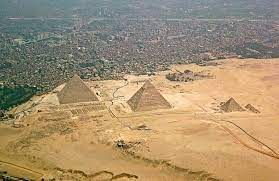
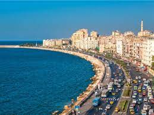
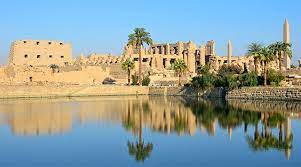
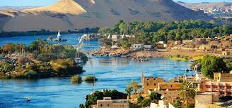

القاهرة هي عاصمة جمهورية مصر العربية وأكبر وأهم مدنها على الإطلاق
وتعد أكبر مدينة عربية من حيث تعداد السكان والمساحة
وتحتل المركز الثاني أفريقياً والسابع عشر عالمياً من حيث التعداد السكاني
يبلغ عدد سكانها 21,322,750 مليون نسمة حسب إحصائيات عام 2021.
يمثلون 20% من إجمالي تعداد سكان مصر أكثر من (100 مليون نسمة)
تعد مدينة القاهرة من أكثر المدن تنوعاً ثقافياً وحضارياً
حيث شهدت العديد من الحقب التاريخية المختلفة على مر العصور
وتوجد فيها العديد من المعالم القديمة والحديثة
فأصبحت متحفاً مفتوحاً يضم آثاراً فرعونية ويونانية ورومانية وقبطية وإسلامية
الجيزة

مدينة الجيزة هي عاصمة محافظة الجيزة. وتشكل مع القاهرة
وشبرا الخيمة معاً القاهرة الكبرى
وتقع مدينة الجيزة في شمال مصر بين نهر النيل إلى الشرق والصحراء
الغربية إلى الغرب
وهي تلاصق القاهرة عاصمة مصر
والجيزة من كبرى المدن المصرية من حيث المساحة والسكان
وهي من المدن القديمة التي أنشئت وقت فتح المسلمون لمصر
و يقع بالجيزة مناطق مهمة مثل أهرام الجيزة و المتحف المصري الكبير و أبو الهول
الإسكندرية

الإسْكَنْدَرِيَّة هي العاصمة الثانية لمصر وكانت عاصمتها قديمًا
وهي عاصمة محافظة الإسكندرية وأكبر مدنها،
تقع على ساحل البحر الأبيض المتوسط بطول حوالي 55 كم شمال غرب دلتا النيل
على مساحة 2523 كم²، يحدها من الشمال البحر الأبيض المتوسط
ومن الجنوب محافظة البحيرة وبحيرة مريوط
حتى الكيلو 71 على طريق القاهرة - الإسكندرية الصحراوي
ويحدها من جهة الشرق محافظة البحيرة وخليج أبو قير
ومن الغرب حتى الكيلو 36.30 على الطريق الساحلي الدولي، ومركز برج العرب
الأقصر

لأقصر تلقب بمدينة المائة باب أو مدينة الشمس، عُرفت سابقاً باسم طيبة
هي عاصمة مصر في العصر الفرعوني
قع على ضفاف نهر النيل والذي يقسمها إلى شطرين البر الشرقي والبر الغربي
وهي عاصمة محافظة الأقصر جنوب مصر
تقع بين خطى عرض 25-26 شمالاً، 32-33 شرقاً،
وتبعد عن العاصمة المصرية القاهرة حوالي 670 كم
وعن شمال مدينة أسوان بحوالي 220 كم، وجنوب مدينة قنا حوالي 56 كم
وعن جنوب غرب مدينة الغردقة بحوالي 280 كم
يحدها من جهة الشمال مركز قوص ومحافظة قنا، ومن الجنوب مركز إدفو ومحافظة أسوان
ومن جهة الشرق محافظة البحر الأحمر
ومن الغرب مركز أرمنت ومحافظة الوادي الجديد، أقرب الموانئ البحرية للمدينة هو ميناء سفاجا،
وأقرب المطارات إليها هو مطار الأقصر الدولي
أسوان

مدينة أسوان هي عاصمة محافظة أسوان في مصر.
اعتبرت أسوان تاريخيًا إحدى أهم مدن جنوب مصر والبوابة الجنوبية لها
حيث يقع إلى الجنوب منها الشلال الأول لنهر النيل
والذي مَثَّل حدًا طبيعيًا بين صعيد مصر والنوبة
تقع المدينة على الضفة الشرقية لنهر النيل
يصلها بالقاهرة خط سكة حديد وطرق برية صحراوية وزراعية
ومراكب نيلية ورحلات جوية محلية
ويبلغ عدد سكانها تقريبا 900 ألف نسمة
وهي واحدة من المدن المبدعة المسجلة في قائمة اليونسكو في مجال الحرف والفنون منذ 2005م